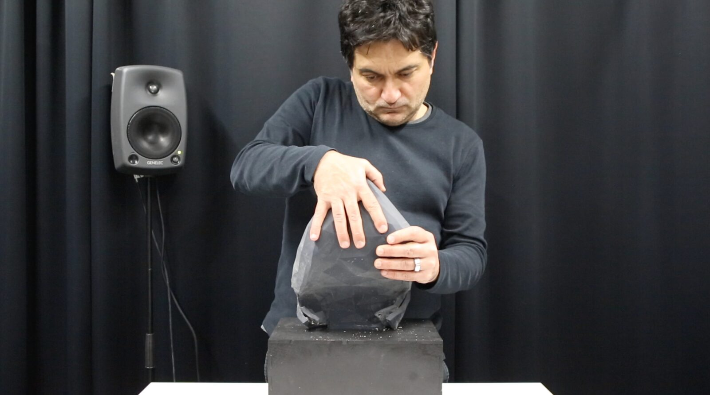
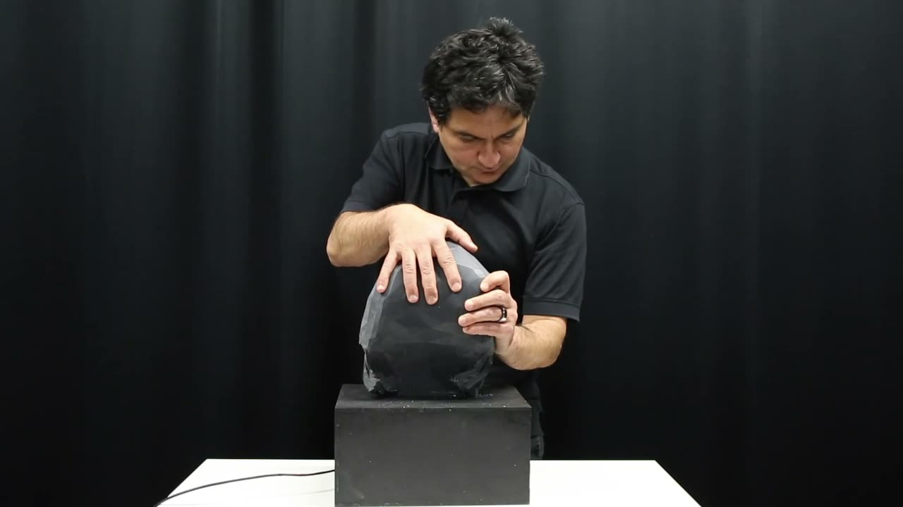

Uncertainty Etude \#2
PROJECT DESCRIPTION
The piece Uncertainty Etude #2, by Koray Tahiroğlu and Miranda Kastemaa, is a composition written for the AI-terity instrument, idiomatically reflecting the autonomous features of its audio synthesis module.
AI-terity instrument is one of the outcomes of our research on digital musical instruments, it is a non-rigid musical instrument and comprises an artificial intelligence (AI) method for generating audio samples for real-time sound synthesis [1]. In this version, we integrated new autonomous features through the use of GANSpaceSynth deep learning hybrid method [2]. Figure 1 shows the current physical appearance of the instrument.

Figure 1. AI-terity 2.0
The physical manipulation of the tactile surface causes control parameter changes in granular synthesis1 through which the performer can explore and navigate through the GAN latent space (figure 2). Moving in between different points in the latent space generates audio samples that are in a continuous state of transformation. At the same time, the instrument can also autonomously move in the latent space to generate audio samples, which formulates its self autonomous behaviour in this composition. The main aspect of the autonomous behaviour is to change and transform the music in a flow of uncertainty when the performer stays in a particular point in the latent space for a longer time. The state of the uncertainty becomes the key point of the composition once the performer responses to a new point in the latent space, breaks the flow of the composition and puts music into another transition.


Figure 2. AI-terity instrument
PROGRAM NOTES
The composition Uncertainty Etude #2 is based on a narrative that keeps the performer remain in unconfident state of performing. The composition provides musical phrases followed by ever-shifting new sounds. Uncertainty Etude #2 is a composition written for the AI-terity instrument that comprises GANSpaceSynth deep learning hybrid method for generating relevant audio samples for real-time audio synthesis. The autonomous behaviour of the AI-terity instrument keeps the performer in an uncertainty state in the performance. Appearance of new sounds and being able to move through timber-changes in latent space allow performer to explore a whole new range of musical possibilities with the AI-terity instrument. Composition turns into a continuous state of playing and opening up new variety of musical demands.
PERFORMANCE REQUIREMENTS
AI-terity instrument has embedded audio interface, I will connect to the main mixer with 2 balanced 1/4" Jack -TRS plugged cables. There should be enough room on the stage for Al-terity instrument. A decent P.A. system, 2 stage monitors, a table 80cm x 80cm and an extension cord with 6 sockets are also required.
A table on stage for the AI-terity instrument
A decent P.A. system and stage monitors
An extension cord with 6 sockets
MEDIA

▶The performance of the composition Uncertainty Etude #2
Media Link: https://vimeo.com/514201580
ACKNOWLEDGEMENTS
This work was supported by the Academy of Finland (project 316549) and Aalto University A!OLE funding.
Footnotes
In this composition we are using the mill~ external - granular synthesiser for Pure data -, which is originally developed by Olli Erik Keskinen. we have modified the external in order to make it work efficiently with the JUMP function.
↩
Citations
- ↩Tahiroğlu, K., Kastemaa, M., & Koli, O. (2020). Al-terity: Non-Rigid Musical Instrument with Artificial Intelligence Applied to Real-Time Audio Synthesis. In R. Michon & F. Schroeder (Eds.), Proceedings of the International Conference on New Interfaces for Musical Expression (pp. 337–342). Birmingham, UK: Birmingham City University. Retrieved from https://www.nime.org/proceedings/2020/nime2020_paper65.pdf
- ↩Tahiroğlu, K., Kastemaa, M., & Koli, O. (2021). AI-terity 2.0: An Autonomous NIME Featuring GANSpaceSynth Deep Learning Model. International Conference on New Interfaces for Musical Expression. Retrieved from https://nime.pubpub.org/pub/9zu49nu5